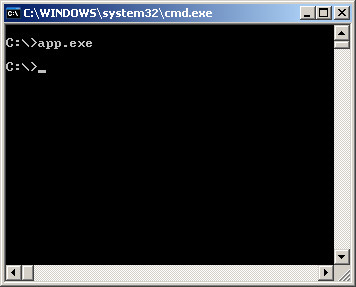
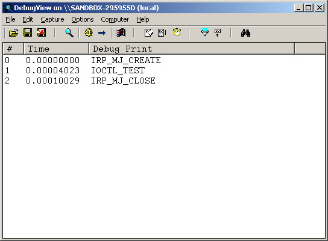

參考資訊：
https://wasm.in/
http://four-f.narod.ru/
https://github.com/steward-fu/ddk
http://www.delphibasics.info/home/delphibasicsprojects/delphidriverdevelopmentkit
main.pas
unit main;
interface
uses
DDDK;
const
DEV_NAME = '\Device\MyDriver';
SYM_NAME = '\DosDevices\MyDriver';
METHOD_BUFFERED = 0;
METHOD_IN_DIRECT = 1;
METHOD_OUT_DIRECT = 2;
METHOD_NEITHER = 3;
FILE_ANY_ACCESS = 0;
FILE_DEVICE_UNKNOWN = $22;
IOCTL_TEST = (FILE_DEVICE_UNKNOWN shl 16) or (FILE_ANY_ACCESS shl 14) or ($800 shl 2) or (METHOD_BUFFERED);
function _DriverEntry(pMyDriver : PDriverObject; pMyRegistry : PUnicodeString) : NTSTATUS; stdcall;
implementation
function IrpOpen(pMyDevice : PDeviceObject; pIrp : PIrp) : NTSTATUS; stdcall;
begin
DbgPrint('IRP_MJ_CREATE', []);
Result := STATUS_SUCCESS;
pIrp^.IoStatus.Information := 0;
pIrp^.IoStatus.Status := Result;
IoCompleteRequest(pIrp, IO_NO_INCREMENT);
end;
function IrpClose(pMyDevice : PDeviceObject; pIrp : PIrp) : NTSTATUS; stdcall;
begin
DbgPrint('IRP_MJ_CLOSE', []);
Result := STATUS_SUCCESS;
pIrp^.IoStatus.Information := 0;
pIrp^.IoStatus.Status := Result;
IoCompleteRequest(pIrp, IO_NO_INCREMENT);
end;
function IrpIOCTL(pMyDevice : PDeviceObject; pIrp : PIrp) : NTSTATUS; stdcall;
var
psk : PIoStackLocation;
code : ULONG;
begin
psk := IoGetCurrentIrpStackLocation(pIrp);
code := psk^.Parameters.DeviceIoControl.IoControlCode;
if code = IOCTL_TEST then
DbgPrint('IOCTL_TEST', []);
Result := STATUS_SUCCESS;
pIrp^.IoStatus.Information := 0;
pIrp^.IoStatus.Status := Result;
IoCompleteRequest(pIrp, IO_NO_INCREMENT);
end;
procedure Unload(pMyDriver : PDriverObject); stdcall;
var
szSymName : TUnicodeString;
begin
RtlInitUnicodeString(@szSymName, SYM_NAME);
IoDeleteSymbolicLink(@szSymName);
IoDeleteDevice(pMyDriver^.DeviceObject);
end;
function _DriverEntry(pMyDriver : PDriverObject; pMyRegistry : PUnicodeString) : NTSTATUS; stdcall;
var
szDevName : TUnicodeString;
szSymName : TUnicodeString;
pMyDevice : PDeviceObject;
begin
RtlInitUnicodeString(@szDevName, DEV_NAME);
RtlInitUnicodeString(@szSymName, SYM_NAME);
Result := IoCreateDevice(pMyDriver, 0, @szDevName, FILE_DEVICE_UNKNOWN, 0, FALSE, pMyDevice);
pMyDriver^.MajorFunction[IRP_MJ_CREATE] := @IrpOpen;
pMyDriver^.MajorFunction[IRP_MJ_CLOSE] := @IrpClose;
pMyDriver^.MajorFunction[IRP_MJ_DEVICE_CONTROL] := @IrpIOCTL;
pMyDriver^.DriverUnload := @Unload;
pMyDevice^.Flags := pMyDevice^.Flags or DO_BUFFERED_IO;
pMyDevice^.Flags := pMyDevice^.Flags and not DO_DEVICE_INITIALIZING;
Result := IoCreateSymbolicLink(@szSymName, @szDevName);
end;
end.
app.pas
program main;
{$APPTYPE CONSOLE}
uses
forms,
dialogs,
windows,
classes,
messages,
sysutils,
variants,
graphics,
controls;
const
METHOD_BUFFERED = 0;
METHOD_IN_DIRECT = 1;
METHOD_OUT_DIRECT = 2;
METHOD_NEITHER = 3;
FILE_ANY_ACCESS = 0;
FILE_DEVICE_UNKNOWN = $22;
IOCTL_TEST = (FILE_DEVICE_UNKNOWN shl 16) or (FILE_ANY_ACCESS shl 14) or ($800 shl 2) or (METHOD_BUFFERED);
IOCTL_GET_BUF = (FILE_DEVICE_UNKNOWN shl 16) or (FILE_ANY_ACCESS shl 14) or ($800 shl 2) or (METHOD_BUFFERED);
IOCTL_SET_BUF = (FILE_DEVICE_UNKNOWN shl 16) or (FILE_ANY_ACCESS shl 14) or ($801 shl 2) or (METHOD_BUFFERED);
IOCTL_GET_DIR = (FILE_DEVICE_UNKNOWN shl 16) or (FILE_ANY_ACCESS shl 14) or ($800 shl 2) or (METHOD_OUT_DIRECT);
IOCTL_SET_DIR = (FILE_DEVICE_UNKNOWN shl 16) or (FILE_ANY_ACCESS shl 14) or ($801 shl 2) or (METHOD_IN_DIRECT);
IOCTL_GET_NEI = (FILE_DEVICE_UNKNOWN shl 16) or (FILE_ANY_ACCESS shl 14) or ($800 shl 2) or (METHOD_NEITHER);
IOCTL_SET_NEI = (FILE_DEVICE_UNKNOWN shl 16) or (FILE_ANY_ACCESS shl 14) or ($801 shl 2) or (METHOD_NEITHER);
var
fd : DWORD;
ret : DWORD;
len : DWORD;
code0 : DWORD;
code1 : DWORD;
szBuf : array[0..255] of Char;
begin
fd := CreateFile('\\.\MyDriver', GENERIC_READ or GENERIC_WRITE, FILE_SHARE_READ, Nil, OPEN_EXISTING, FILE_ATTRIBUTE_NORMAL, 0);
if CompareStr('BUF', paramStr(1)) = 0 then begin
code0 := IOCTL_SET_BUF;
code1 := IOCTL_GET_BUF;
end else if CompareStr('DIR', paramStr(1)) = 0 then begin
code0 := IOCTL_SET_DIR;
code1 := IOCTL_GET_DIR;
end else if CompareStr('NEI', paramStr(1)) = 0 then begin
code0 := IOCTL_SET_NEI;
code1 := IOCTL_GET_NEI;
end else
code0 := IOCTL_TEST;
szBuf := 'I am error';
len := StrLen(szBuf);
if code0 = IOCTL_TEST then
DeviceIoControl(fd, code0, Nil, 0, Nil, 0, ret, Nil)
else begin
DeviceIoControl(fd, code0, @szBuf[0], len, Nil, 0, ret, Nil);
WriteLn(Format('SET: %s, %d', [szBuf, ret]));
FillChar(szBuf, 255, 0);
DeviceIoControl(fd, code1, Nil, 0, @szBuf[0], 255, ret, Nil);
WriteLn(Format('GET: %s, %d', [szBuf, ret]));
end;
CloseHandle(fd);
end.
完成

